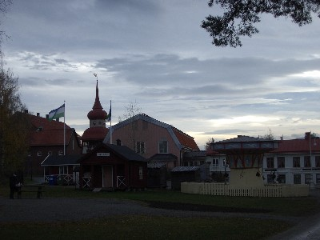
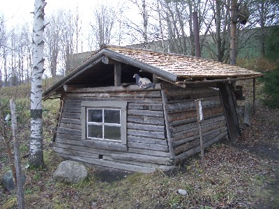
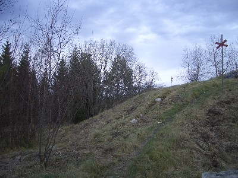
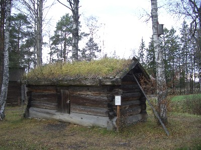
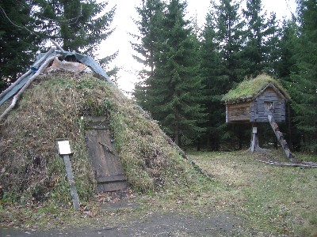
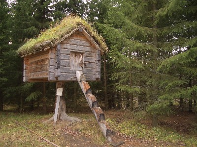
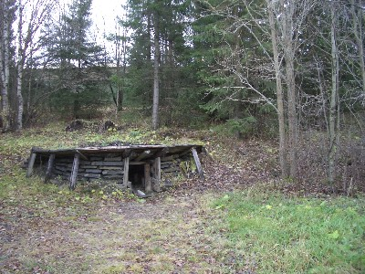
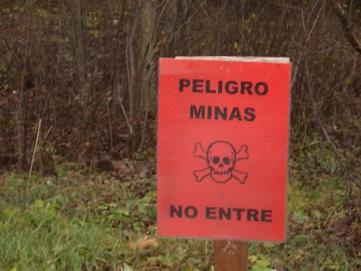
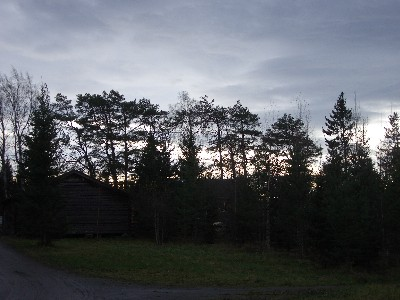

A little bit outside of Jamtli
Jamtli, pronounced like a 'y'.

Jamtli (the spire there-over
is the entrance)

A hut from some time in the
past.Notice the half-obvious grouse-ish bird and the secretive owl in the upper right corner.

Some fake (it isn't a real
trail) red crosses (typical of Sweden) on a trail in Jamtli.

A sod hut.

The teepee on the left
will be what Sean and my fort will look like eventually.

The really cool tree fort;
a Sami grain-storage bin.

A tar pit? I don't know how that
works, but that is what it is.

What?

If your processor is still
working, some nice trees.
That is all.< / div >